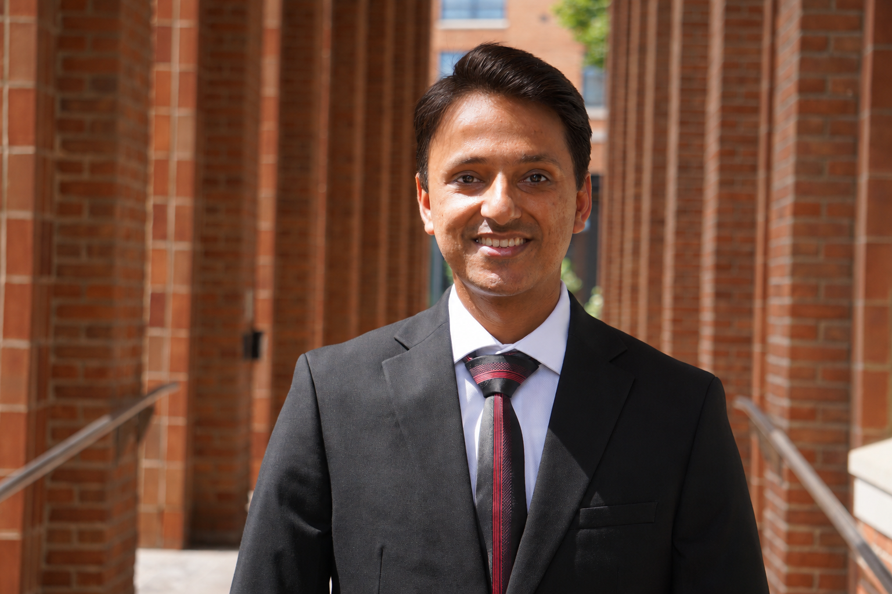

PhD Candidate · Operations Management
Operations Management & Business Analytics
Fisher College of Business, The Ohio State University
Hello and welcome. Thank you for visiting.
I am on the 2026–2027 job market.
My research examines how powerful supply chain intermediaries and their contracts shape supply chain performance, with a focus on the retail pharmaceutical supply chain, payer/insurance contracts, and pro-environmental operations. I use a broad empirical toolkit, including applied econometrics, causal inference, and field and laboratory experiments, to produce evidence useful to managers and policymakers.
Before beginning my PhD, I spent 12 years at Accenture working across IT operations and business analytics in healthcare, insurance, and technology.

Research Interests
Job Market Paper
Working Papers
Research in Progress
Instructor, Fisher College of Business, The Ohio State University
Instructor of record. Student Evaluation of Instructor (SEI): 4.8 / 5.0.
"Professor thoroughly explained all topics and math involved in work. He always welcomed questions and would answer them thoroughly." (student evaluation)
"He was very passionate about what he is teaching and truly cares about his students. Having a professor like this makes me want to learn." (student evaluation)
Graduate Teaching Assistant, Fisher College of Business
Including one fully online recitation.
Earlier teaching experience: Ad hoc instructor, Accenture Learning & Knowledge Management (2013), coached professional classrooms on mainframe technology. Mentor, Starbase CT (2016–2017), public speaking and robotics at Betances STEM School and Jumoke Academy, Hartford, CT.
Regulating Powerful Intermediaries (job market paper).
Regulating Powerful Intermediaries (job market paper) and Multiproduct Retail Decisions under Aggregate Contracts.
Regulating Powerful Intermediaries (job market paper).
Improving Recycling Quality through AI and Green Nudges.
Regulating Powerful Intermediaries (job market paper).
First Place, Business category: "Regulation of Supply Chain Intermediaries within Pharmaceutical Supply Chains."
Dissertation research on supply chain intermediaries.
Academic Service
Involved in the creation of "The Doctorate in Operations Management Embassy (D.O.M.E.)," making transparent the opportunities available to emerging scholars pursuing OM faculty careers.
DSI Annual Conference (2025, 2026), POMS (2026), INFORMS Annual Meeting (2026).
DSI Panel on AI in Healthcare.
Decision Sciences Journal.
INFORMS, Production and Operations Management Society (POMS), Decision Sciences Institute (DSI).
Awards
Business category, for the dissertation paper "Regulation of Supply Chain Intermediaries within Pharmaceutical Supply Chains."
Chicago, IL, out of 350+ entries.
Out of 350+ entries.
I'd be glad to hear from you, whether about research, a possible collaboration, or my job market materials. Email is the best way to reach me.
Fisher College of Business
The Ohio State University, Columbus, OH